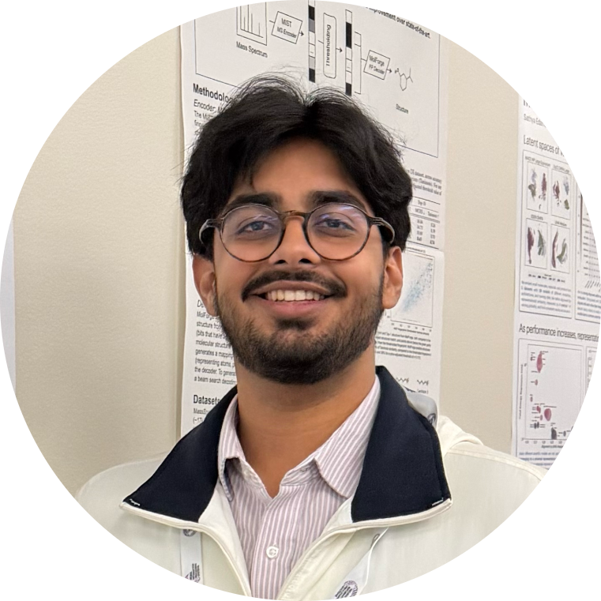
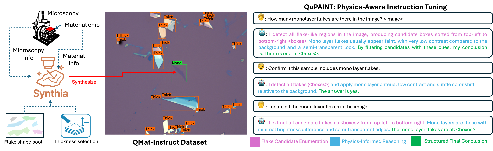
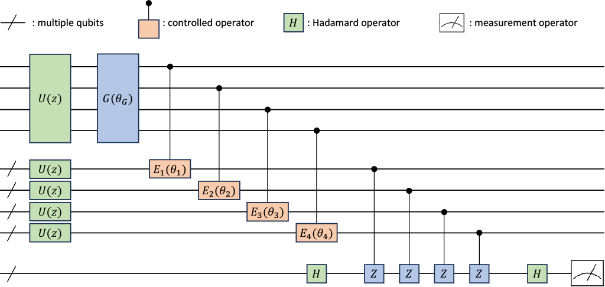

|
Sankalp Pandey I'm currently a fourth-year honors undergraduate at the University of Arkansas in Fayetteville, completing B.Sc. degrees in Computer Science and Computer Engineering. I work at the Computer Vision & Image Understanding Lab, advised by Dr. Khoa Luu. |
 |
{kind=link}
Research InterestsMy research focuses on computer vision and multimodal learning for scientific discovery, with applications in computational neuroscience and quantum materials. |
Updates
Feb. 2026:
Awarded the Distinguished Doctoral Fellowship by the University of Arkansas!
Oct. 2025:
CLIFF accepted to
NeurIPS 2025
AI for Accelerated Materials Discovery (AI4Mat) Workshop
!
Sep. 2025:
Featured by the
University of Arkansas Honors College
for research in quantum machine learning!
Jul. 2025:
Ranked 5th out of 67 teams in the
Algonauts 2025a> Vision–Brain Encoding Challenge!
Jun. 2025:
Featured by the
University of Arkansas Honors College
for research in neuroscience and nanomaterials!
Apr. 2025:
QMoE accepted to the
Quantum Computing & Reinforcement Learning (QCRL) Workshop
at IEEE Quantum Computing & Engineering (QCE) 2025!
Feb. 2024:
Joined the Computer Vision & Image Understanding Lab as an undergraduate research assistant!
|

|
TIMBRE: Time-aware Multimodal Vision–Brain Encoding
Xuan Bac Nguyen, Sankalp Pandey, Suhyun Kim, Hojin Jang, Arabinda Kumar Choudhary, Khoa Luu Under submission, 2025 A time-aware vision–brain encoding framework that models how neural representations evolve over long timescales using biologically inspired temporal priors. |
|
 |
QuPAINT: Physics-Aware Instruction Tuning for Quantum Material Discovery
Xuan Bac Nguyen, Hoang-Quan Nguyen, Sankalp Pandey, Tim Faltermeier, Nicholas Borys, Hugh Churchill, Khoa Luu Under submission, 2025 A physics-aware multimodal framework combining synthetic optics, instruction tuning, and physics-informed attention for robust quantum flake understanding. |

|
CLIFF: Continual Learning for Flake Layer Classification
Sankalp Pandey, Xuan Bac Nguyen, Nicholas Borys, Hugh Churchill, Khoa Luu NeurIPS 2025 AI4Mat Workshop A continual learning framework that incrementally adapts to new quantum materials while minimizing catastrophic forgetting. |
|
 |
QMoE: A Quantum Mixture of Experts Framework
Hoang-Quan Nguyen, Xuan Bac Nguyen, Sankalp Pandey, Samee U. Khan, Ilya Safro, Khoa Luu IEEE QCE 2025 (QCRL Workshop) A quantum mixture-of-experts architecture enabling scalable and expressive quantum neural networks via learnable quantum routing. |

|
φ-Adapt: Physics-Informed Adaptation for 2D Quantum Materials
Hoang-Quan Nguyen, Xuan Bac Nguyen, Sankalp Pandey, Tim Faltermeier, Nicholas Borys, Hugh Churchill, Khoa Luu Under submission, 2025 A physics-informed adaptation framework that bridges synthetic and real optical domains for accurate quantum flake thickness estimation. |
Miscellanea |
Teaching |
Teaching Assistant, CSCE 20004 Programming Foundations I
Teaching Assistant, CSCE 20004 Programming Foundations II |
|
Thank you to Dr. Jon Barron for this website template. |